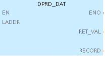
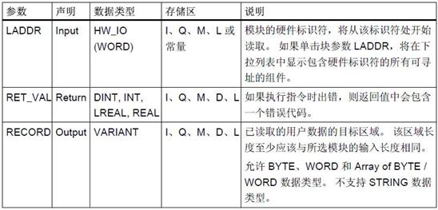
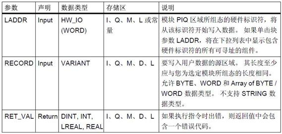
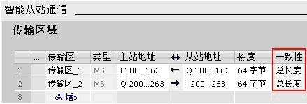
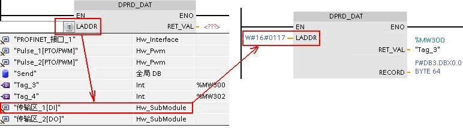
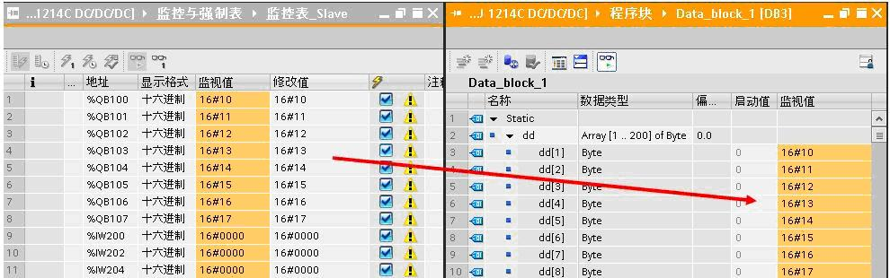
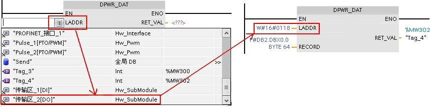
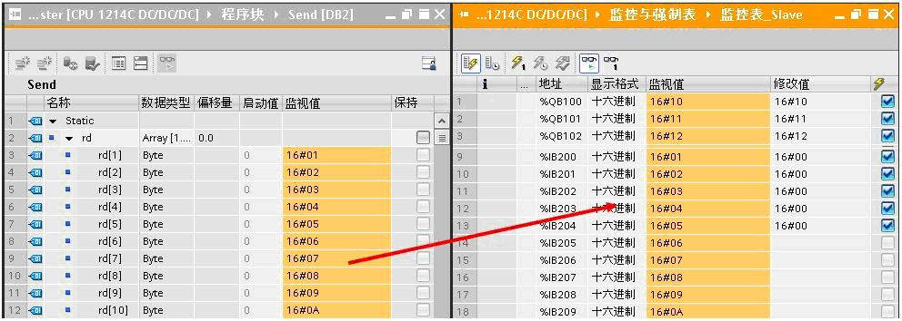

可以同步更改的数据称为一致性数据。
CPU 为所有基本数据类型（如Word 或 DWord)和所有系统定义的结构（例如 IEC_TIMERS 或 DTL)保持数据的一致性。数值的读/写操作不会被中断。（例如，在读写四字节的DWord 完成之前，CPU 会防止对该 DWord 进行访问）。
S7-1200 若要通过PROFIBUS DP对从站进行一致性数据读写，而这些数据无法通过基本数据类型表示时，系统为S7-1200提供了一致性数据读写的指令，DPRD_DAT和 DPWR_DAT。这两个指令块在STEP7 V11 指令的“扩展指令 /分布式I/O / 其它”中。通过DP一致性数据读 / 写指令块，S7-1200 的DP主站可以对从站最多64 个字节读取，最多64个字节的写入。
DPRD_DAT ：读取DP标准从站的一致性数据。

参数说明：

DPWR_DAT：将一致性数据写入 DP 标准从站
参数说明：

以两个S7-1200 DP通信为例介绍编程方法步骤：
（1）、设备网络组态同上，传输区参数数据一致性要选择“总长度”。

（2）、编写程序
在主循环程序OB1中执行DPRD_DAT和DPWR_DAT。
调用DPRD_DAT ，单击块参数 LADDR，将在下拉列表中选择“传输区_1”，DB3从0地址开始存放接收数据。当执行指令发生错误时，可在MW300查询返回的错误代码。

程序执行后，DP主站通过传输区_1读取DP从站从QB100开始的64字节数据，读取结果放到DB3 。

调用DPWR_DAT ，单击块参数 LADDR，将在下拉列表中选择“传输区_2”，DB2从0开始的地址为数据源。当执行指令发生错误时，可在MW302返回错误代码。

执行DPWR_DAT， DP主站将DB2中64字节数据通过传输区_2写到DP从站IB200开始的地址。

 注意：DP从站一致性数据读/写指令，只能访问无法通过基本数据类型表示的数据，比如3 个字节或 4 个字节以上的数据区域。 否则，访问将遭到拒绝，并返回错误代码 W#16#8090 。
注意：DP从站一致性数据读/写指令，只能访问无法通过基本数据类型表示的数据，比如3 个字节或 4 个字节以上的数据区域。 否则，访问将遭到拒绝，并返回错误代码 W#16#8090 。